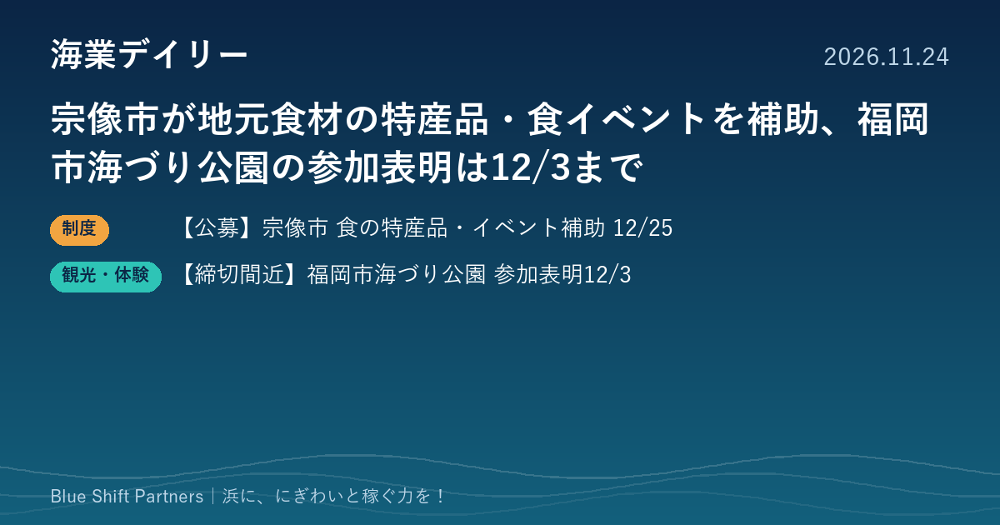

2026.11.24
宗像市が地元食材の特産品・食イベントを補助、福岡市海づり公園の参加表明は12/3まで

福岡県宗像市は、市内の食材を使った特産品の開発や、事業者が連携して開く食のイベントの経費を補助しています。受付は12月25日までで、先着順です。福岡市の海づり公園の緑地部を活用する事業者の公募は、参加表明の受付が11月27日に始まり、12月3日15時に締め切られます。
【公募】宗像市「食のまち宗像推進補助金」、地元食材の特産品開発や食のイベントに上限20万円（12月25日まで）
福岡県宗像市は、市内の食材を活かした販路拡大や域内消費を促すため、特産品づくりや食のイベントの経費の一部を補助しています。対象は、市内で生産された原材料を加工した商品などの新規開発や改良、パッケージ変更と、飲食事業者を含む3者以上が連携して地元食材の料理を提供・販売するイベントやフェアです。補助率は対象経費の2分の1、上限は20万円で、市内に事業所か店舗があり市税等の滞納がないことなどが要件です。受付は12月25日までの先着順で、予算の上限に達した時点で終わります。交付決定の前に取り組んだ事業は対象外で、提出方法は募集要領で確認が必要です。
ここがポイント：宗像市内の漁協や水産加工・飲食の事業者なら、地元の魚を使った加工品のパッケージ刷新や、飲食店と組んだ魚食フェアの費用に充てられます。補助額は小さいものの、市区町村がこうした小口の補助を設けている例として、ほかの浜でも自分の市町村に同じような制度がないか確かめてみる価値があります。
出典：宗像市「食のまち宗像推進補助金」（2026-06-01）
【締切間近】福岡市海づり公園の緑地部等活用事業、参加表明の受付は11月27日から12月3日15時まで
福岡市は、唐泊漁港にある福岡市海づり公園の緑地部などの空いたスペースを活用する事業者を公募しています。参加表明と参加資格審査の申請は11月27日から12月3日15時まで受け付け、公募の参考図書の交付申込も同じ12月3日15時が期限です。その後は、12月11日（予備日14日）に事前申込制の個別対話、2027年1月29日から2月4日に提案書の受付、3月15日（予備日16日）にプレゼンテーションを行い、優先交渉権者は3月16日に決定・公表する予定です。参加資格や提出方法は公募要綱で確認する必要があります。
ここがポイント：釣り施設という「人が来る理由」がある漁港で、空き地を民間の提案で活かそうとする公募です。応募を考える事業者は、参加表明の受付期間が1週間と短いことに注意が必要です。応募しない自治体・漁協にとっても、スケジュールの組み方や公表資料は、自分の漁港で同じような公募を考えるときの参考になります。
出典：福岡市 農林水産局水産部（海業推進）「福岡市海づり公園緑地部等活用事業の事業者公募について」（2026-11-11）
宗像市の補助は上限20万円と小さな額ですが、パッケージの刷新や数店舗で組む魚食フェアなら、十分に背中を押せる規模です。国や県の大きな補助金に目が行きがちですが、市区町村の小口の制度は、浜の事業者にとって身近で、最初の一歩に使いやすい財源です。自分の市町村の商工・観光の担当課のページを、一度のぞいてみてはいかがでしょうか。